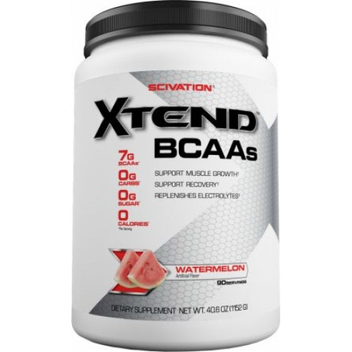

Gainer
QISA MƏLUMAT
Təsvir: əzələ kütləsini yığmaq üçün güclü düsturdur.
Əzələləri qur, gücünü artır və bərpanı sürətləndir.
MƏHSUL HAQQINDA
100% Premium Mass Gainer
Təsvir: əzələ kütləsini yığmaq üçün güclü düsturdur.
Əzələləri qur, gücünü artır və bərpanı sürətləndir.
100% Premium Mass Gainer əzələ kütləsinin qurulması və gücün artırılması, həmçinin bərpa vaxtının qısaldılması üçün xüsusi düsturla gücləndirilmişdir.
Tərkibində böyük miqdarda faydalı kalorilər vardır.
MuscleTech-dən olan 100% Premium Mass Gainer-in hər bir porsiyasında
(südlə qarışdırıldıqda) 1430-dan çox kalori, həmçinin 70 qram yüksək
keyfiyyətli zülal, 286 qram karbohidratlar, BCAA, qlutamin, əvəzolunmaz
minerallar və digər inqrediyentlər vardır.
Daha çox əzələ kütləsi qurmağa kömək edir.
MuscleTech 100% Premium Mass Gainer-dən istifadə edən atletlər 8 həftə ərzində,
heç bir şeydən istifadə etməyən atletlərlə müqayisədə iki dəfə daha çox əzələ
kütləsi yığmışdırlar.
Almaq üçün click-lə
Protein
QISA MƏLUMAT
Təsvir: 100% Platinum Whey – yüksək bioloji dəyərə malik olan və tərkibində əvəzolunmaz amin turşuları və BCAA-lar olan zərdab zülalıdır. O sürətlə əzələ metabolizmini aktivləşdirir və təmin edir, eləcə də quru əzələ kütləsini artırmağa kömək edir.
MƏHSUL HAQQINDA
Təsvir: 100% Platinum Whey – yüksək bioloji dəyərə malik olan və tərkibində əvəzolunmaz amin turşuları və BCAA-lar olan zərdab zülalıdır. O sürətlə əzələ metabolizmini aktivləşdirir və təmin edir, eləcə də quru əzələ kütləsini artırmağa kömək edir.
VPLab istehsalı olan 100% Platinum Whey-in tərkibində zərdab zülalının mikrofiltrasiya edilmiş izolyatı və aşağı yağ və karbohidrat tərkibli zərdab zülalının ultrafiltrasiya edilmiş konsentratı var. Bu zülalın sürətli və maksimal mənimsənilməsini təmin edir.
VPLab 100% Platinum Whey-in əsas üstünlükləri:
Zərdab zülalının ultrafiltrasiya edilmiş konsentratının və mikrofiltrasiya edilmiş izolyatının kombinasiyası.
DigeZyme® həzm fermentləri kompleksi ilə zənginləşdirilib.
No amino spiking – azad formada ucuz amin turşular əlavə edilməyib.
Zərdab zülalı təbii qidalanan inəklərin südündən alınıb.
Əvəzolunmaz amin turşularının yüksək tərkibinə və yüksək mənimsənilmə sürətinə malikdir.
Hətta suda hazırlandıqda belə mükəmməl dada malikdir.
VPLab 100% Platinum Whey – zərdab zülalları üçün yeni standartdır. Məhsul qabaqcıl texnologiyalardan istifadə edilərək istehsal olunub və bütün beynəlxalq keyfiyyət standartlarına uyğun gəlir. Bu gözəl dada malik olan premium sinifli mükəmməl zülaldır!
Almaq üçün click-lə
Amino
QISA MƏLUMAT
Təsvir: Ultimate Nutrition-dan olan Amino 2002 - ən yüksək dərəcədə təmizlənmiş zərdab zülalından hazırlanmış əla keyfiyyətli aminturşularıdır.
MƏHSUL HAQQINDA
Təsvir: Ultimate Nutrition-dan olan Amino 2002 - ən yüksək dərəcədə təmizlənmiş zərdab zülalından hazırlanmış əla keyfiyyətli aminturşularıdır. Burada soya komponentləri, kazein, buğda zülalı yoxdur və yalnız zərdab fraksiyaları (alfa laktalbumin, beta laktoqlobulin, laktoferrin, laktoperoksidaza, serum albumin) vardır. Ultimate Amino 2002-nin istehsalı prosesində idman qidaları sahəsində ən qabaqcıl texnologiyalardan istifadə olunur. Bu preparat aşağı temperaturlu izolyasiyada ultra- və mikrofiltrasiya üsulu ilə alınmışdır. Nəticədə, praktiki olaraq 100% mənimsənilən təmiz aminturşusu qarışığı alınır, hansı ki əzələlərin maksimal dərəcədə tez böyüməsinə və bərpasına kömək edir.
Almaq üçün click-lə
Creatine
QISA MƏLUMAT
Təsvir: Kreatin əzələ hüceyrələrini enerji ilə təmin edir, əzələ kütləsinin və gücün artmasına kömək edir.
MƏHSUL HAQQINDA
Təsvir: Kreatin əzələ hüceyrələrini enerji ilə təmin edir, əzələ kütləsinin və gücün artmasına kömək edir. Platinum 100% Creatine yanaşmalar arasında olan bərpa müddətini yaxşılaşdırmaq və əzələlərin məsuldarlığını artırmaq üçün əzələ enerjisinin vacib mənbəyi olan ATF-ni tez bir müddətdə bərpa etməyə kömək edir.
Əzələlərdə enerji ehtiyatları nə qədər çox olsa, o qədər də yaxşı onlar öz işini görürlər, məsələn, ağır atletika, sprint, tullanmalar, amerikan futbolu, xokkey və adi futbol kimi tez bir zamanda və intensiv şəkildə enerji artımı tələb olunduğu hallarda. Kreatin əzələlərdə kreatin fosfat formasında saxlandığından, əlavə olaraq kreatinin qəbulu hasil olunan enerjinin həcmini çoxalda bilər, bu da öz növbəsində sizin əzələlərinizin daha da intensiv şəkildə işləmələrinə imkan verəcəkdir. Orqanizmin özü tərəfindən kreatinin hasil edilməsinə baxmayaraq, bu intensiv iş görmək üçün əzələləri lazım olan əlavə enerji ilə təmin etməkdə kifayət etmir.
 Almaq üçün click-lə
Almaq üçün click-lə
BCAA
QISA MƏLUMAT
Təsvir: Xtend –məşqləriniz zamanı sizin katalizatorunuz!Əzələlər yaradır – Piyləri yandırır – Bərpa olmağa kömək edir!Scivation istehsalı olan Xtend tərkibində şəkər və karbohidratlar olmayan dünyada ən qabaqcıl məşqzamanı istifadə olunan kom
MƏHSUL HAQQINDA
Təsvir: Xtend –məşqləriniz zamanı sizin katalizatorunuz!
Əzələlər yaradır – Piyləri yandırır – Bərpa olmağa kömək edir!
Scivation istehsalı olan Xtend tərkibində şəkər və karbohidratlar olmayan dünyada ən qabaqcıl məşqzamanı istifadə olunan kompleksdir!
Xtend məşqdə intensivliyin maksimum dərəcəsinə çatdırılması, zülalın optimal sintezinin təmin olunması və bərpa üçün elmi yolla hazırlanmış məhsuldur.
İki universitet tədqiqatları ilə sınaqdan keçirilmiş Xtend-in tərkibində hüceyrədaxili proseslərə cəlb olunan və əzələlərin iş qabiliyyətini optimallaşdıran aktiv inqrediyentlərin yoxlanılmış nisbəti vardır.
- Yoxlanılmış nisbətdə 7000 mq. BCAA
- 3500 mq. leysin
- 2500 mq. qlütamin
- 1000 mq. citrulline malate
- 1180 mq. elektrolitlər
- 640 mkq. vitaminВ6
- 0 karbohidrat
- 0 şəkər
- 0 kalori
- 0 xolesterin
Xtend əla həll olunur və çox gözəl dada malikdir. Xtend asanlıqla adi qaşıqla qarışdırılır və məşq və istənilən digər fiziki və yorucu yüklənmələr zamanı əlavə funksional imkanlar yaradır. Xtend bir neçə ləzzətli dadlarda istehsal olunur ki, hər bir məşqinizi daha da əla etsin!
Dünyaca məşhur atletlər, peşəkar bodibilderlər, pauerliftinq çempionları və sadəcə adi idmançılar Xtend-dən öz məşqləri zamanı istifadə edirlər. Sən də onlalar qoşul Scivation Xtend-lə daha da sərt, davamlı və intensiv məşq et!

Almaq üçün click-lə